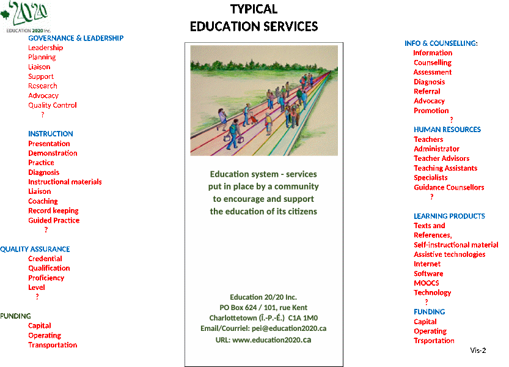

About
education
About
education
Typical
Education Services
Occasional Paper 12 January 20, 2020
An education system is an array of programs and services put in place by a community to encourage and support the education of its citizens; support is usually focused on (1) helping individual citizens gain skills, knowledge, attitudes and values that help them thrive in the years ahead and (2) providing human resources needed to maintain the community as a place people want to live.
Typical education functions or services include:
Governance – decision making processes put in place to structure, and regulate actions
Leadership – process of motivating a group of people to achieve a common goal.
Funding - providing resources to meet educational needs
Regulation – make rules, laws and policies
Information – current and dependable information as the basis of making decisions
Counselling – providing help, advice and a course of action
Instruction – providing information, lectures, presentations, examples and models of understanding in systemic way.
Quality assurance - the maintenance of a desired level of quality in a service or product,
Learning products – materials and devices available to assist teachers and learners to acquire new knowledge, skills and attitudes.
Human resources – people with skills and attributes available to provide services to the education sector
(A schematic of these services is provided on the reverse of this page)
The PEI Department of Education and Lifelong learning describes its role as one of developing and delivering “high quality programs and curriculum in English and French to Island children from birth to Grade 12.”; that is narrower than the role set out above and leaves out both citizens and services. A review is in order.
We owe it to our fellow citizens.
Don Glendenning
The above article represents the views of the writer and not Education 20/20 Inc.
Education 20/20 Inc. 101 Kent St., PO Box 624/rue Kent, BP 624 Charlottetown, PEI C1A 1M0 Canada
Tel: 902-892-2060; Email: pei@education2020.ca; www.education2020.ca
